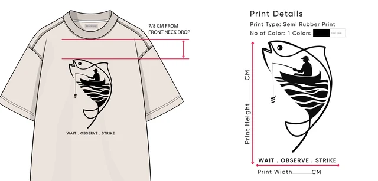
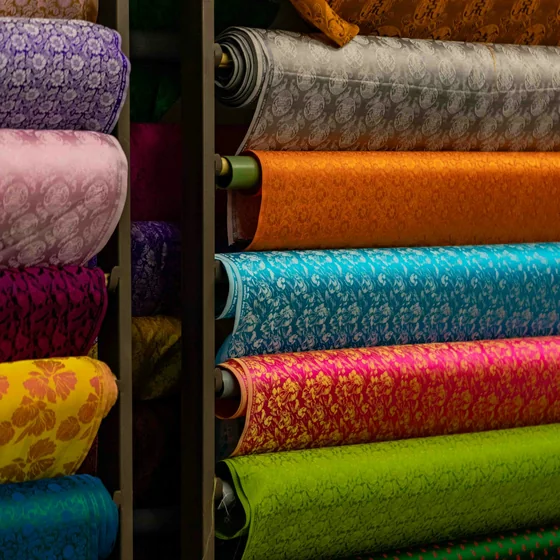
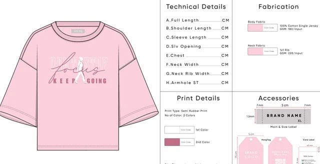
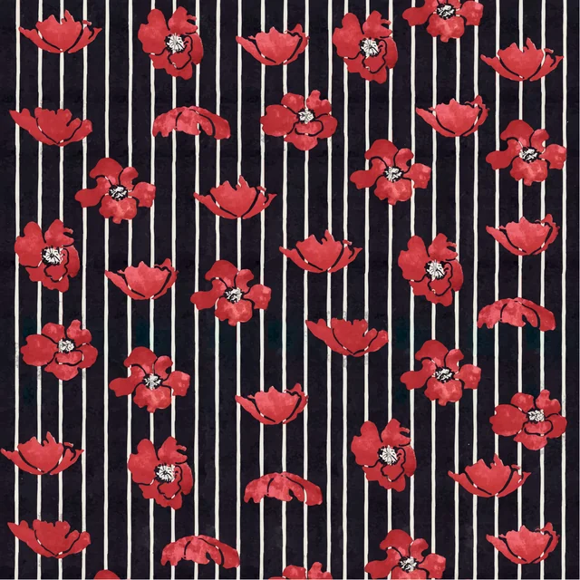
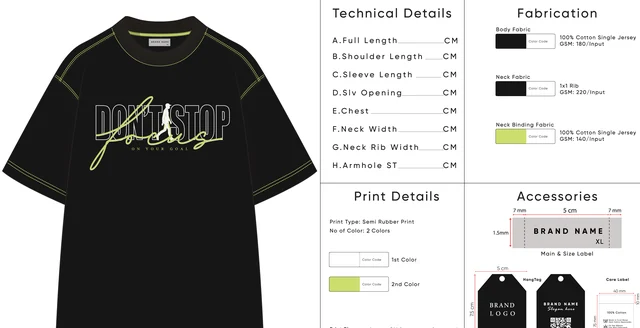
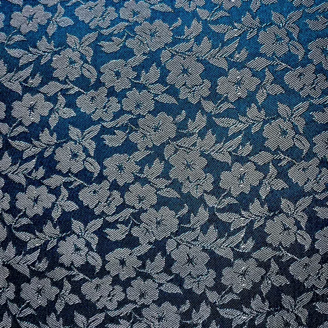
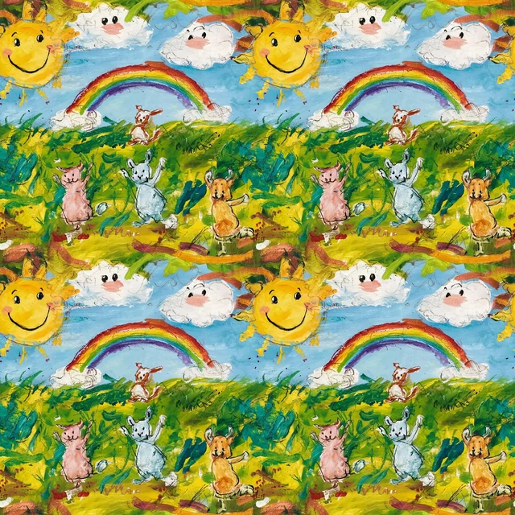

On-model photos from the flat shots you already have.
Your garment on a consistent model, in consistent light, across the whole catalog — no studio day, no scheduling, and every image checked by a human against the real product.
Flat shot in. On-model out.







The photoshoot is the bottleneck between you and launch.
The shoot you keep postponing
Model, photographer, studio, steaming, retouching — a full production to photograph a restock. So new SKUs sit unlisted.
The catalog that looks like five brands
Different models, different light, different floors — every shoot batch ages your grid a different way.
Flat shots don't sell fit
Customers buy when they can see drape on a body. A flat lay answers "what is it" — never "how will it look on me."
The step that matters is the human in the middle.
You send flat shots
The product photos you already have — front and back, decent light. We confirm usability before quoting.
Model direction, agreed
You pick the model look, poses and setting once — it holds across the whole catalog.
Generate → human QA
Every image is checked against your real garment: print placement, seams, colour, drape. Failures die here, not in your store.
Delivered, channel-ready
Crops and ratios for your store and marketplaces, with disclosure guidance where platforms require it.
A catalog that finally looks like one brand.
On-model images per garment
Your product on a model, in your agreed direction — from the flat shot alone.
Consistent model & light
The same looks, poses and lighting across every SKU — the grid reads as one collection.
Colourway coverage
Every colour variant photographed — without re-shooting anything.
Channel-ready crops
Ratios and resolutions for Shopify, Instagram and the marketplaces you name.
Human garment-fidelity QA
Each image checked against the real product before you see it — documented.
Disclosure guidance
Where a platform requires an AI label, we tell you — before you publish.
Full usage rights
Delivered images are yours to use across your channels, documented.
Restock speed
New colour or returning SKU? New images in days — no studio calendar.
Two revision rounds
Model direction and image corrections — built into the price.
The garment is the truth. The image serves it.
An AI image that "improves" your product — sharper print, better drape, a colour that pops more than the dye ever will — is a returns machine. Our QA rejects any image that doesn't match the physical garment a customer will unbox. What you show is what they get, or the image doesn't ship.
That's also why the frames above are placeholders: we don't decorate this page with generated fashion imagery and call it proof.
When to shoot real. When to generate.
Real photoshoot wins
- Brand campaigns and hero imagery with a story
- Fabric stories that need macro texture in motion
- Lookbooks built around a specific muse or location
- We'll tell you when this is your answer — honestly
AI on-model wins
- Catalog scale — tens or hundreds of SKUs
- Colourway variants without re-shooting
- Restocks and new drops on a deadline
- A consistent grid when shoots came out patchy
Most brands end up with both — each doing what it's best at.
Safe to publish. Safe to stand behind.
No borrowed faces
Synthetic models only — never a real person's likeness without consent. No scraped faces, no look-alikes.
Platform rules, tracked
Marketplace AI-imagery policies differ and change. We deliver compliant for the channels you name, and flag where a label is required.
Your images, documented
Usage rights to every delivered image are yours, in writing — store, ads, marketplaces.
Asked before every catalog.
That's the entire job, and it's why a human QA step sits between the AI and you. Every image is checked against your real product — print placement, seams, colour, drape, hardware. Images that flatter the garment by changing it get rejected before you ever see them.
The flat shots or ghost-mannequin photos you already have — front and back, decent light, any phone camera at product quality works. If your current shots aren't usable we'll tell you exactly what to reshoot before quoting, not after.
Yes — that's one of the biggest advantages. Your whole catalog can share consistent model looks, poses and lighting, so the grid finally looks like one brand. You choose the model direction (age, style, setting) at the start and it holds across every SKU.
Policies differ by platform and they change — some require AI-generated imagery to be disclosed or restrict it for certain categories. We track the current rules, deliver images that comply for the channels you name, and tell you plainly where a label or a real photo is required.
The models are synthetic — not generated from any real person's likeness without consent, ever. No scraped faces, no celebrity look-alikes. You get documented usage rights to every delivered image.
For brand campaigns and hero imagery — probably yes, and we'll say so. AI on-model photography wins where shoots break down: catalog scale, restocks, colourway variants and speed. Most brands end up with both, each doing what it's best at.
Would you rather hire one person? Our team delivers AI Video & Photography end to end — or you can brief an approved AI Video & Photography specialist directly from our curated network.
Find an AI Video & Photography specialistSend one flat shot. See what your catalog could look like.
Tell us the garments and where the photos will run — fixed quote within 24 hours.